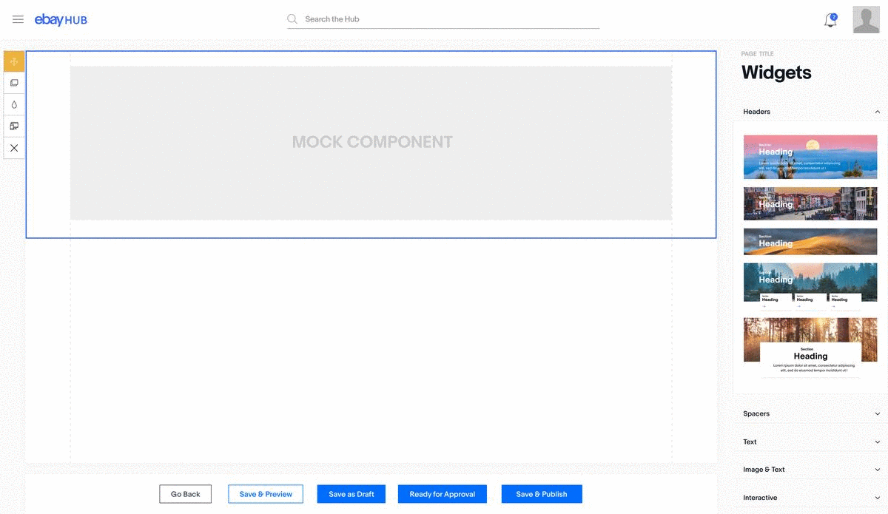
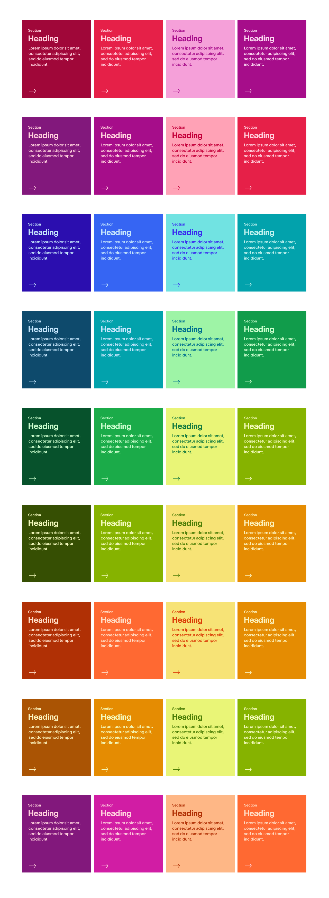
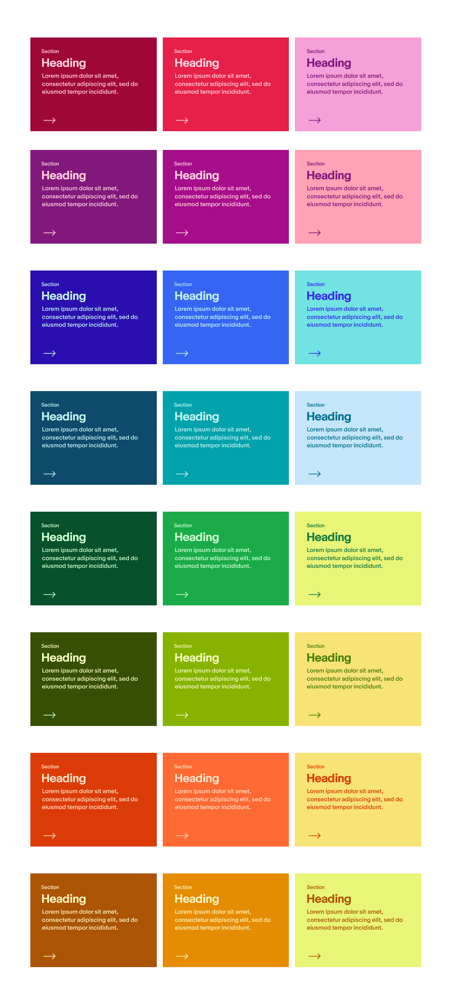
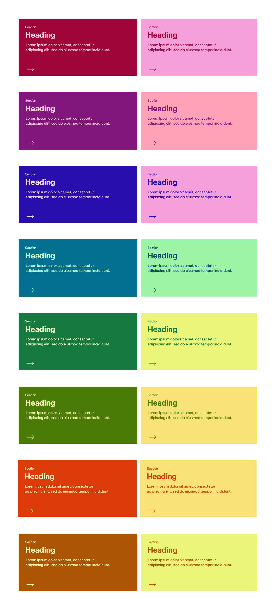
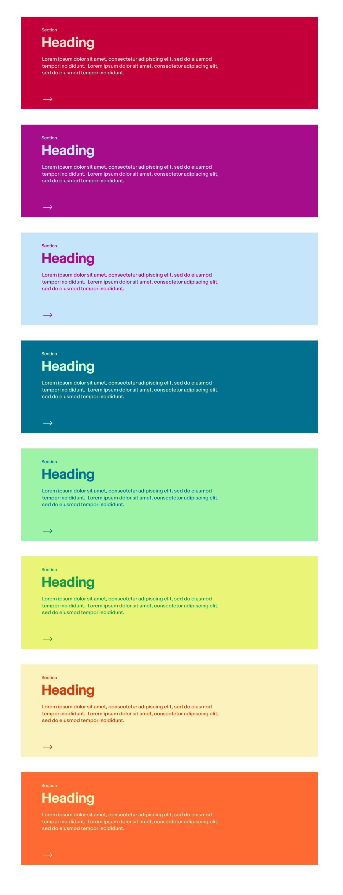

The Project
SiteBuilder is a drag and drop sitebuilding tool within ebay. It is central to the intranet. It allows all the different teams within eBay to communicate across the company in an effort to increase efficiency, communication and culture within the company.
The SiteBuilder platform was in much need of a redesign to address issues with the user interface, as well as rethinking the drag and drop components in an effort to make them more powerful, functional and flexible for users. The components consisted of a collection of text layouts which could be easily recreated by the text editor. The icons were very basic and ugly, and the visuals in general were very uncompelling.
My Role
My responsibility on the Design team was to push the SiteBuilder platform forward and filter feedback from users and stakeholders to help do this.
For the user interface redesign I was the lead product designer, and the front-end developer. The engineering team did not have much bandwidth at the time so I jumped in to help with the development. I collaborated with other designers and stakeholders to address the problems and endeavoured to create a consensus on how to move forward.
The second part of the project was component development. I was the lead product designer and also did some front-end development along with the engineering team who took care of the more involved dev work.
The Existing Experience
Over time it became clear that were limitations on the SiteBuilder Platform that needed to be addressed. The number of drag and drop components had mushroomed to 70+, and it was difficult for users to navigate through them and identify their functionality. We an abundance of user feedback which highlighted this issue.
Also the components were very basic, not aesthetically pleasing, and were essentially basic layout patterns that could be easily recreated with the text editor. Components rarely conved any unique functionality and the argument could be made that the product was a glorified text editor.
THE EXISTING USER INTERFACE
- Components are vertically stacked and not grouped, making browsing difficult (70+ components).
- Users often missed the available filter functionality for searching components.
- Components are difficult to identify & differentiate.
- Uninspiring icons and visuals.
- Non eBay brand colors used in UI.
- Inability to create page drafts.
EXISTING SITEBUILER COMPONENTS
- Have a lot of text components that are very similar, and the text editor is able to recreate all these variations, creating duplication and redundency of components.
- Components are very basic and have no theming or flexibility. Very minimal interactivity.
- Uninspiring icons and visuals.
- Non eBay brand colors & fonts.
- Inability to create page drafts.
Exploring New UI
This is one of the other designs with an alternative approach that was ultimately not successful.
NEW LAYOUT
- Seperate layouts from the various widgets or functionalities which could be dragged and dropped onto column layouts.
- If you had a 2 column layout, you could drag and drop a calendar widget onto one column, and drag and drop a text widget onto the other column.
- Also the ability to stack widgets above and below each other while in the same column.
- Also the editing area, which is left of the component sidebar extends full width across the screen, and the component side bar hovers above it. The transparency between the two elements was great visually.
PROBLEMS
- Tremendous engineering effort to create the functionality to drag and drop widgets within layouts. It would require a complete ground up rebuild and we didn’t have the bandwidth.
- The site editing area extends 100% of the page width with the component sidebar hovering above it while anchored to the right side. Many people edit on their laptops where the screen is smaller than desktop. Some people have 10 inch screens, and the overlapping component sidebar took up far too much real estate from the editing area to be practical. Reducing the size of the component sidebar meant reducing the size of the thumbnails, which lead them to become very difficult to identify.
A New Approach
We kept the accordions as a way of seperating and grouping the different components, and also kept playing with the idea of creating a feeling of 3 dimensional space, where some elements felt recessed and others in the forefront. However there needed to be a new approach to the overall layout.
- Seperating the component sidebar and the editing area completely. No overlap.
- Making the editing area a raised panel, with the rest of the page and editing area recessed.
- The page title moved over to the top of the component sidebar and away from the editing area, in order to maximize the editing area available.
- Putting in a full screen toggle in the top right of the editing area which allowed the user to make the editing area full screen, and the component sidebar is pushed off screen.
- Using a muted color palette which didn’t compete page with the content the user is creating. There was some experimentation with adding brand colors but it was abandoned.
- The menu anchored at the bottom of the page was limited to width of the editing area, allowing better scrollability for component sidebar.
- Redesigned the component menu on the left side of the selected component. On hover the black and white line icons take on various brand colors, giving them some flavor.
- Made the outline around selected components a bold bright blue, in an effort to make selection clearer to the user. Previously it had been a muted and strange pink.
- Added descriptive tool tips. When hovering over a component thumbnail in the sidebar, a tool tip appears which gives a brief description of the component.
- The component sidebar was also made moderately wider to make it easier for users to identify components.
- The component level menu bar on the left side was completely redesigned with new line icons, brand colors and brand friendly look and feel.


THE FINAL VERSION
Exploring New Components
The exisiting components were very basic. The icons were solid, black and low fidelity. The pages created by users reflected these problems. So this is what I did…
- Redesigned all the components and added new ones.
- Added more flexibility, theming and adaptablity to components.
- Added ability to add hyperlinks to targeted elements and not just text and images.
- Incorporated eBay brand and brand colors, and typography into the platform.
- Added many more visual and interactive components, like flipcards, image based components, different header options with multiple layouts and themes.
- Added multiple page templates that were available to users.
These are very small sample of some of components which incorporate some of these improvements.
GALLERY COMPONENT
This is a prototype created in figma for a gallery component. It starts from the SiteBuilder editing screen through to how it looks and functions on a webpage. This is an example of smarter components with increased flexibility and interactivity, in order to allow users to handle images in a more functional and useful way.

COLOR BOXES COMPONENT
These cards bring some much needed color to webpages. Users don’t need to upload any images or use design software. The colors are coded in, there are 4 different layouts, and 16 different color themes.
4 Column Layout
3 Column Layout
2 Column Layout
1 Column Layout
SMARTER HYPERLINKS
On the platform, the only way to create a link was by using the text editor, and it only worked with some text and images.
This limitation created a clumsy user experience when it made sense to have clickable cards and areas, especially so for mobile.
I designed a UI which would allow us to make an element linkable and editable, and not require the text editor.
This has been used on mobile card components and will be used on many components in the pipeline.
Conclusion
The UI redesign and component upgrades have created a better user experience for site creators and people who visit our sites. Our best verification of whether a feature or design was successful is from feedback from the various teams across eBay whom we interact with constantly. We received very positive feedback about the smarter layout of the SiteBuilder editing screen and the addition of more powerful and flexible components.
Analytics show the platform is growing in adoption across the company, which is a great sign for the future health of the platform. There is still much room to improve and make the platform more powerful, adaptive and user friendly, but we have come a long way in a short time.